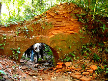

History

Remains of Nalrajar Garh in Chilapata Forest
The Dooars belonged to the Kamata Kingdom under the Koch dynasty; and taking advantage of the weakness of the Koch kingdom in subsequent times, Bhutan took possession of the Dooars. This region was controlled by the kingdom of Bhutan when the British annexed it in 1865 after the Bhutan War under the command of Captain Hedayat Ali. The area was divided into two parts: the eastern part was merged with Goalpara district in Assam and the western part was turned into a new district named Western Dooars. Again in the year 1869, the name was changed to Jalpaiguri District. After the end of the British rule in India in 1947, the Dooars acceded into the dominion of India and it merged with the Union of India shortly afterwards in 1949.